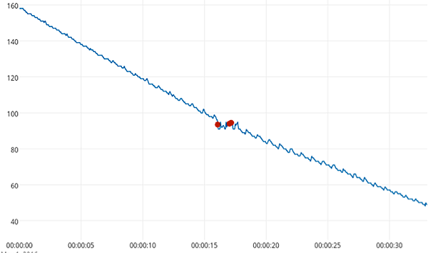
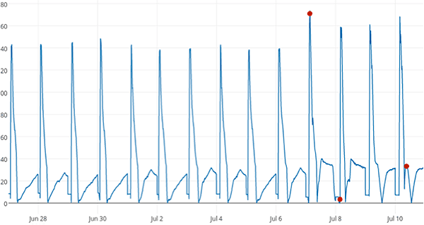

NAB Competition 2016 Winners
 Zuha Agha•Algorithms Intern
Zuha Agha•Algorithms InternThe wait is over! We are proud to announce the winners of the 2016 Numenta Anomaly Benchmark (NAB) Competition, held in conjunction with IEEE World Congress on Computational Intelligence. The competition, which ran from February through July this year, comes to a close after an exciting round of submissions. This was the first ever publicly held contest for NAB.
When NAB was introduced last year, its mission was to address the need for a standardized and publicly accessible benchmark for performance evaluation of real-time anomaly detection. NAB’s open source repository includes over 50 labeled data streams from a wide range of real-world sources that capture the traits crucial for testing anomaly detection in streaming data. In addition, NAB contains a collection of popular anomaly detection algorithms and a unique scoring scheme that enables effective comparison of different detection methods against each other.
In an effort to take our mission of expanding NAB even further, we launched the inaugural NAB Competition where participants can showcase their understanding of real-time anomaly detection by contributing suitable datasets or algorithms, and get a chance to win exciting cash prizes in return. Overall, the competition was well received by the research community and attracted submissions not only from the U.S but across the globe, including India and Russia. After careful consideration, we decided on the following list of winners for the two competition categories:
Dataset Category Winners
| Prize | Name |
|---|---|
| #1 | Samya Bagchi |
| #2 | BK Ramesh |
Algorithms Category Winners
| Prize | Name(s) |
|---|---|
| #1 | Mikhail Smirnov |
| #2 | Felix Andrews |
| #3 | Vladislav Ishimtsev & Evgeny Burnaev |
All winning entries demonstrated creativity and a good sense of the problem definition. In the dataset category, the entry bagging first prize provided labeled anomalies for real patient blood pressure data, a very important domain for streaming analytics. The second prize was awarded to a dataset retrieved from a car engine motor system with annotated anomalies for voltage and current metrics. Here are some interesting examples of anomalies from our winning datasets, shown with red dots.

The graph above shows a patient’s blood pressure readings every 5 milliseconds as the pressure drops steadily from diastole to systole. Every small oscillatory pattern represents a heartbeat. The first anomaly indicates pressure noise and the second anomaly indicates an irregular heartbeat, given by subtle temporal pattern changes.

This graph shows current sensor data of a motor engine. The first anomaly is an increase in maximum amplitude of a cycle, followed by another anomaly that shows a lag in starting the engine and the last anomaly resulting in engine failure.
In the algorithms category, winning submissions also achieved very impressive scores on the benchmark. The entry securing first place worked with a novel contextual encoding scheme, followed closely in second place by a modified Hierarchical Temporal Memory algorithm, and third place by a k-nearest neighbor context based approach. All of these datasets and algorithms are valuable contributions to NAB, helping accelerate our efforts to grow this benchmark and improve its usefulness for all researchers. Winning entries are to be officially included in an upcoming version release of NAB, and the algorithm scores will be displayed on the NAB leaderboard.
We would like to extend our heartiest congratulations to all of our winners on their achievement! We are also thankful to all participants for their commendable effort and enthusiasm. The NAB competition hopes to return next year, but until then we continue to welcome all relevant contributions at our open-source code base https://github.com/numenta/NAB. For any questions or comments on NAB, you can post at https://discourse.numenta.org/c/nupic/nab.
Zuha Agha is spending her summer as an Algorithms Intern at Numenta. She is a student of PhD Computer Science at University of Pittsburgh. Her interests lie at the crossroads of Machine Learning, Artificial Intelligence and Computer Vision. In her free time, she loves reading and learning new skills.
Zuha Agha•Algorithms Intern